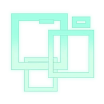
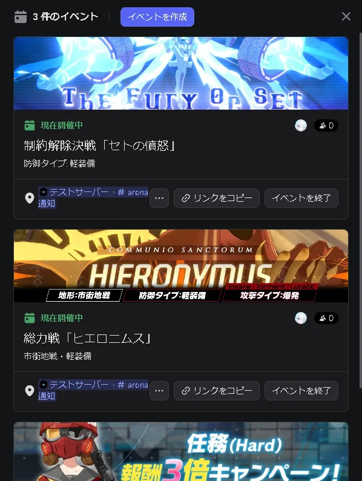
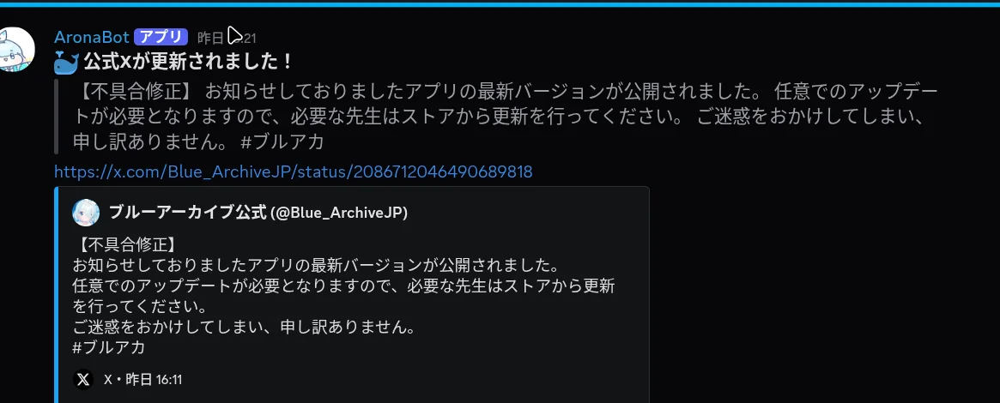
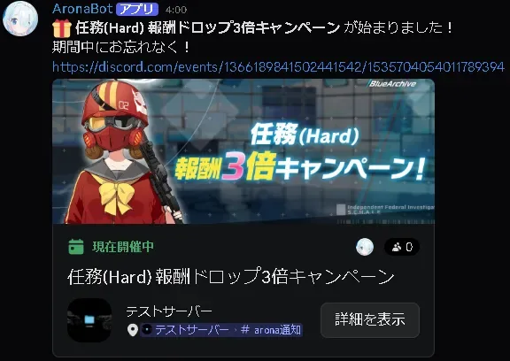
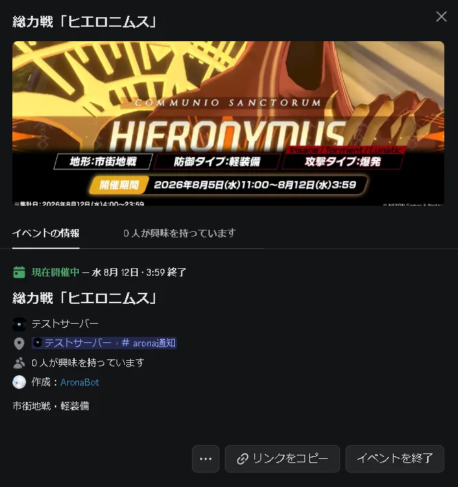
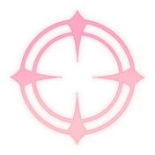
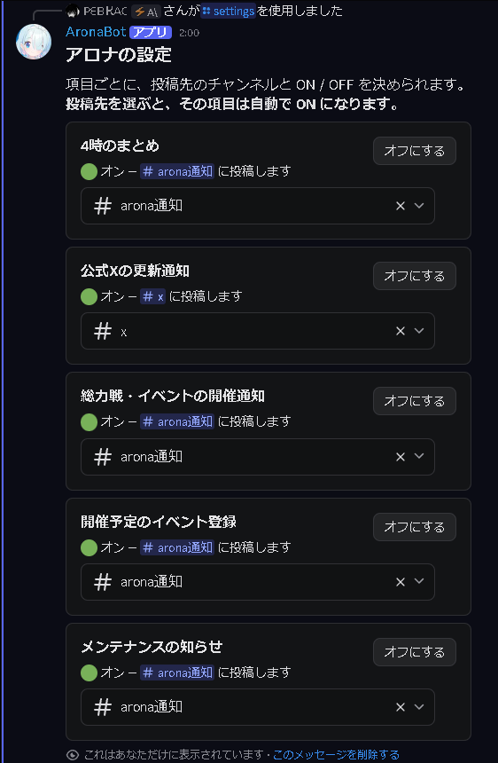
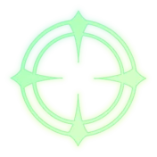
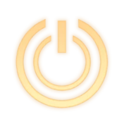

01
このAronaBotの機能
招待してすぐ使えるものと、設定してから届くものがあります。
主な機能
イベントの自動登録
公式の告知を拾って、Discord のイベントに予定を登録します。 総力戦・合同火力演習・キャンペーン。 期間と告知画像つきで並ぶので、いつ始まっていつ終わるかが一目で分かります。
{kind=link}

主な機能
公式 X の通知
公式アカウントの投稿を拾って、選んだチャンネルへ流します。 開催の知らせやメンテナンスの開始・延長・終了も、 告知を読み取ってそのつどお伝えします。
{kind=link}

そのほかにできること
- 総力戦・大決戦を調べる攻略情報とボーダーを、選択式で。
/st - リマインダー忘れたくないメッセージを、時間が来たら引用して
- 4 時のまとめその日から始まるものを毎朝
- ガチャを 10 連開催中の募集から選んで、本物の確率で。
/g
すぐ使えるもの
スラッシュコマンドを打つだけです。設定は要りません。
/st
総力戦・大決戦を調べる
コンテンツとボスを選ぶと、攻略情報（推奨属性・地形・編成の考え方・ギミック）か ボーダー情報（プラチナ / ゴールド / シルバー）を出します。 開催中は定期的に数字を取り直します。
{kind=link}
{kind=link}
{kind=link}
/g
開催中の募集を 10 連引く
今やっている募集から選んで引けます。公式 X の告知を読んで、 ピックアップ生徒も提供割合も自動で合わせます。 周年記念募集なら★3 は 6%、すり抜けには周年の生徒も混ざります。 10 回目は★2以上が確定。ボタンからそのまま引き直せます。
開催中のものが分からないときは、2026 年 7 月 29 日に廃止された 「通常募集」の確率で引きます。
/h
できることの一覧を出す
迷ったらこれです。自分にだけ見えます。
設定すると届くもの
次の 5 つを、それぞれチャンネルを選んで受け取れます。既定はすべてオフです。
「開催予定のイベント登録」だけはチャンネルへ投稿しないので、選ばずにオンにできます。
- 4 時のまとめ毎朝 4 時。その日から始まるイベントやメンテナンスに触れます
- 公式 X の更新通知公式アカウントの投稿を拾って流します
- 総力戦・イベントの開催通知総力戦・大決戦のほか、合同火力演習・キャンペーンも、始まったときにお知らせします。総力戦だけは終了の前日にもう一度出て、そのときはボーダーの数字を続けて出します
- 開催予定のイベント登録告知を拾って、Discord のイベントに予定を登録します
- メンテナンスの知らせ定期メンテナンスと緊急メンテナンスの開始・延長・終了。延長のときは新しい終了予定の時刻を出します
公式 X の投稿は、そのまま流れます
公式アカウントが投稿すると、本文と画像をそのまま選んだチャンネルへ出します。 元の投稿へのリンクも付くので、X を開かなくても中身が読めます。
始まるときも、終わる前にも届きます
告知を読み取って「何が始まったか」を一言で伝えます。 総力戦は終了の前日にもう一度出て、ボーダーの数字を続けて出します。 下に付くカードは登録された予定そのもので、押すと期間と場所が開きます。
{kind=link}

予定はサーバーの「イベント」に並びます
チャンネルへの投稿ではありません。サーバー名の下にある「イベント」に、 期間と告知画像つきで登録されます。開催通知に貼られるリンクからも飛べます。
{kind=link}

ブルアカの計算を、ブラウザだけで。
ボットとは別に、計算まわりのツールを置いています。先生レベル、募集の天井、装備の設計図、戦術対抗戦。 数字はゲームのデータをそのまま使っていて、推測した値は入れていません。Discord に招待していなくても使えます。

02
つかいはじめる
お知らせを受け取るまで、3 つの手順です。
- 1
サーバーに招待する
上のボタンから追加します。追加しただけでは何も投稿しません。
- 2
/settingsを叩く項目ごとのカードが出ます。使えるのは「サーバー管理」の権限を持つ人だけです。
- 3
投稿先を選ぶ
メニューからチャンネルを選ぶと、その項目は自動でオンになります。 表示が🟢に変われば完了です。
「開催予定のイベント登録」をオンにすると、そのとき開催中のものもすぐ登録されます。 次の告知を待つ必要はありません。
{kind=link}

/settings の画面
03
メッセージから呼ぶもの
忘れたくないメッセージに、時間を仕掛けられます。
リマインダー設定
スラッシュコマンドではありません。忘れたくないメッセージを 長押し（スマホ）／右クリック（PC）して、 「アプリ」→ AronaBot → リマインダー設定と進みます。
時間が来ると、そのメッセージを引用してお知らせします。 予約したあとに出る「リマインダー解除」ボタンで取り消せます。

04
よくある質問
つまずきやすいところを集めました。
招待したのに何も投稿されません
それで正常です。既定はすべてオフになっています。/settings で投稿先を選ぶと動き出します。
/settings が見当たりません
「サーバー管理」の権限を持っていない場合、コマンド自体が出ません。サーバーの管理者に頼んでください。
リマインダーのコマンドが出てきません
スラッシュコマンドではありません。対象のメッセージを長押し（スマホ）／右クリック（PC）して、「アプリ」の中から選びます。
/g のピックアップが古い気がします
公式 X のピックアップ募集の告知を拾った時点で切り替わります。 告知より前は、その回のピックアップを知る方法がありません。 読み取れなかったときは、廃止された「通常募集」の形で引きます。
リマインダーがこれ以上設定できません
同時に持てるのは3 件までです（「サーバー管理」の権限を持つ人は 15 件）。 届くのを待つか、予約したときに出る「リマインダー解除」で減らしてください。
「イベント登録」はどこに出ますか
サーバー名の下にある「イベント」です。チャンネルへは投稿しません。 この項目だけはチャンネルを選ばなくてもオンにできます。 選ぶと、そこが「イベントの場所」として表示されます。
登録されたイベントの日付がずれています
告知の文面から読み取っているので、書かれ方によっては外すことがあります。
/settings の「開催予定のイベント登録」からそのサーバーぶんだけ消せます。
消したものは作り直しません。
メンテナンスの知らせが二重に届きます
「公式 X の更新通知」と同じチャンネルにしていると、公式の投稿そのものと
アロナの知らせが並びます。/settings で別のチャンネルに分けてください。
ボーダーの数字が変わりません
開催期間外は前回の最終結果を出します。開催中は定期的に取り直していますが、元のデータが更新される間隔によります。
攻略情報が出るまで待たされます
その場で最新の情報を検索してからまとめているためです。同じボスの 2 回目は速くなります。
- スレッドも投稿先に選べます — ただしアーカイブされると届かなくなります
- 拾えるのは公式 X に出た告知だけです — 公式が投稿していないものは分かりません
アロナをあなたのサーバーにも
サーバーに招待する追加しただけでは何も投稿しません。設定はあとから /settings で。